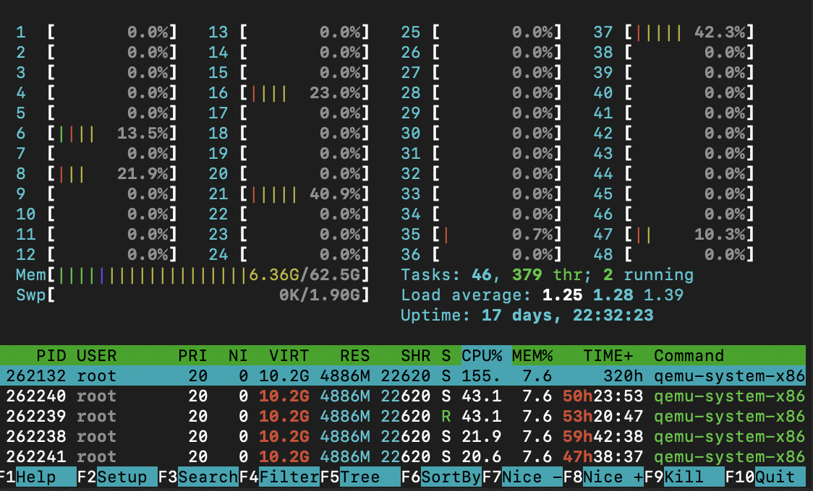

Hello everyone, I am Hritvi Bhandari and am currently a third year student pursuing Computer Science and Engineering in Indian Institute of Technology, Roorkee. I have been selected as a mentee at Cloud Native Computing Foundation with KubeVirt where I will be working to add the kernel boot functionality in it. I would like to thank my mentors Daniel Belenky, Daniel Hiller and Fabian Deutsch for the opportunity. In this blog I am going to tell you about how I got to know about CNCF, got selected as a mentee and about the journey so far.
Getting into the program
I had my eye on all the Linux Foundation events since I got a scholarship to attend the Open Source Summit + Embedded Linux Conference, Europe 2019, and have had added myself to CNCF slack. Therefore, I got to know about the mentorship program through the #mentoring channel on CNCF slack. I explored the projects that were listed here
In order to apply as a mentee you first have to create a profile on Community Bridge and have to apply for a project from there. After you apply, there are some tasks that you have to complete in order to successfully complete the application. For KubeVirt we had 2 tasks:
1. To submit a cover letter answering the following questions:
- How did you find out about our mentorship program?
- Why are you interested in this project?
- What experience and knowledge/skills do you have that are applicable to this project?
- What do you hope to get out of this mentorship experience?
2. To submit a resume.
I spent some days reading about KubeVirt and the Community bridge program, updating my resume and writing my cover letter. The program results were going to be announced on 20th May. I waited till 10 PM for the results but it wasn’t announced till then and I slept early. It was the next day that I got to know that I have been selected as a mentee for the project through this PR by Daniel Belenky.
Journey so far
First to give you a brief introduction about Kubevirt,
KubeVirt is a virtual machine management add-on for Kubernetes. The aim is to provide a common ground for virtualization solutions on top of Kubernetes. It extends Kubernetes by adding additional virtualization resource types (especially the VM type) through Kubernetes's Custom Resource Definitions API. By using this mechanism, the Kubernetes API can be used to manage these VM resources alongside all other resources Kubernetes provides.
So in short, Kubevirt makes it possible to run and manage both VM and containers through Kubernetes. It represents VM as custom resources and manages changes to libvirt domains based on state of those resources. Why Libvirt? Kubevirt internally uses libvirt for managing qemu that creates the software emulation necessary for creating VMs. Thus we can also see Kubevirt as a program that adds the functionality of creating VMs through qemu in Kubernetes.
My project is to add kernel boot feature in KubeVirt. KubeVirt till now allows to boot a VM from regular(virtual) disks. An alternative booting method is to directly provide a kernel, initrd, and cmdline to a VM for booting. So I have to work on defining the relevant public API and adding the necessary kernel boot support to KubeVirt.
Talking about the journey so far, week 1 went in getting familiar with the community and mentors, and setting up the project on our local machines. Kubevirt requires kvm to be installed on the machine and kvm is till now only available for Ubuntu therefore it was not possible for me to set up the project on my MacOS. I even tried to set up the project in a VM but as it added 3 layers of nested virtualization, one by the VM and 2 layers by kubevirt(one by creating VMs and the other the cluster created by kubevirt), it wouldn’t work. It was then Fabian provided us with remote machines he got for us through CNCF Lab to set up the project.
Week 2 involved studying more about the project in a deeper level and getting more insights of how kubevirt calls the libvirt and qemu functionality to add virtualization in kubernetes. I also read about what kernel boot parameters are and how qemu gives us the functionality to boot a VM through kernel, initrd and cmdline. After that, I created a design proposal for my project. It is still left to be reviewed and therefore any feedback from the community would definitely be helpful.
Signing off for today, thanks!